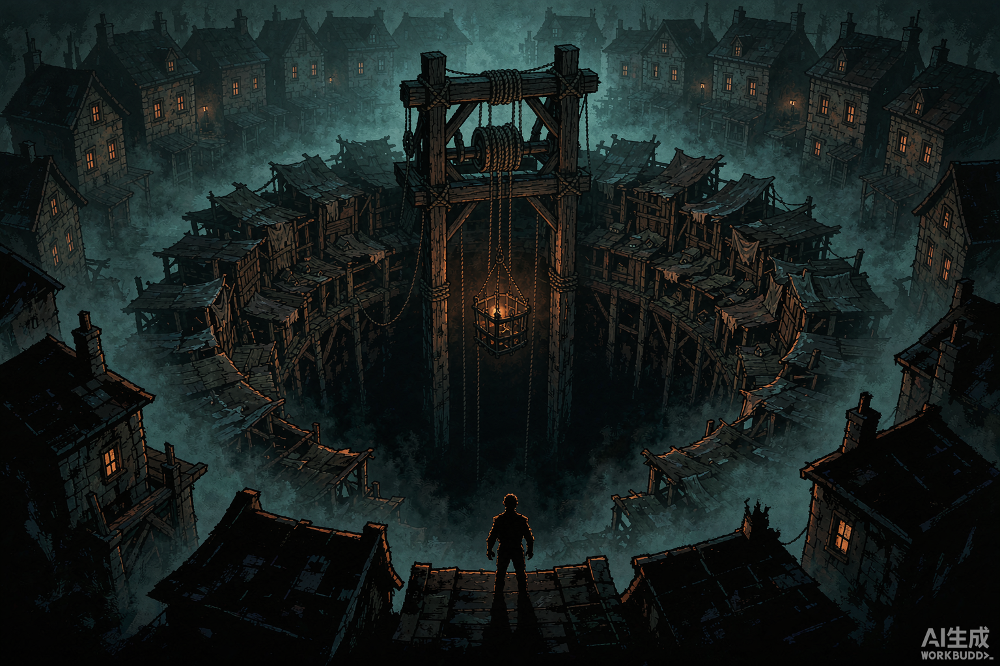
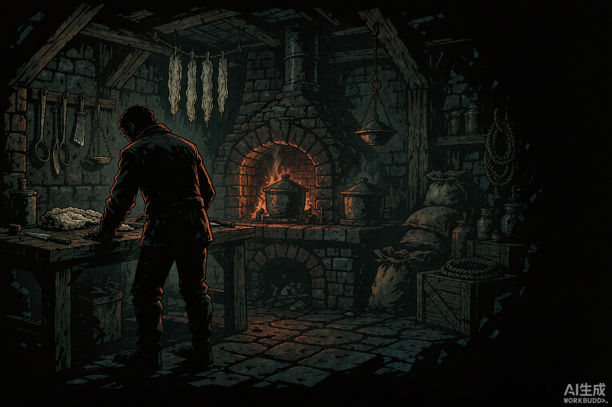
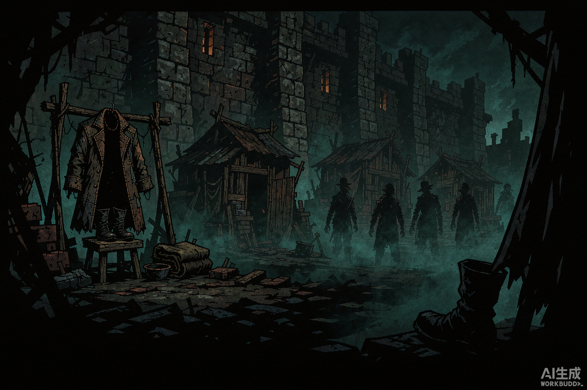
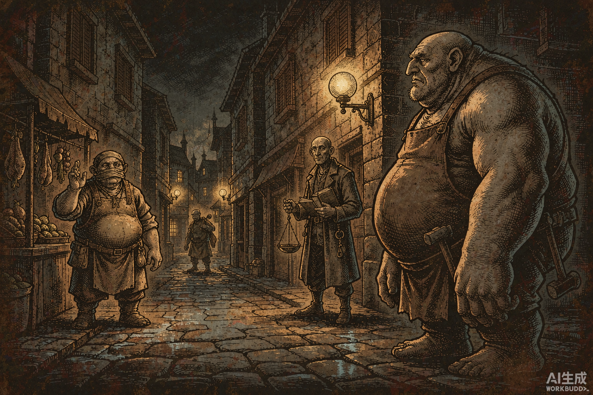
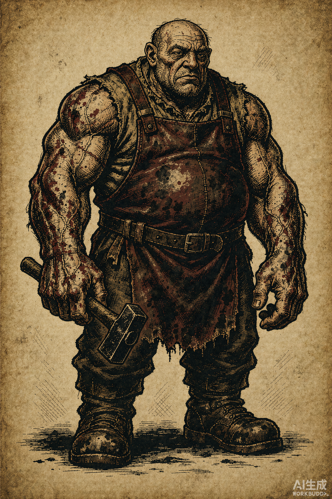
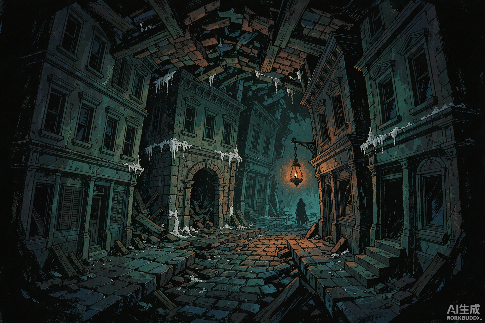
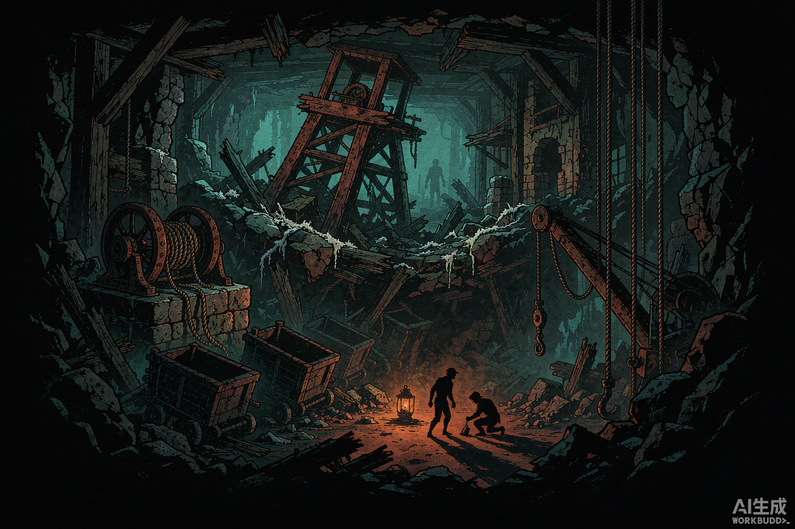
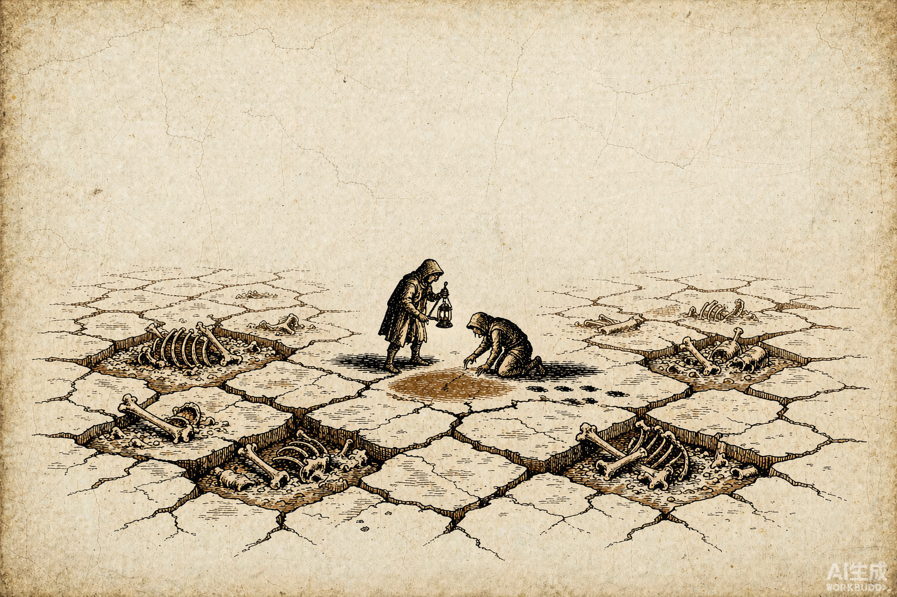

空腔 · 图鉴
状态：正典补充（2026-11-03）。 本文与 WORLD.md 同级，是它的下卷：
WORLD.md 回答"这世界为什么是这样"，本文回答"这里具体有什么"。
四卷：城的地面（生活区与功能建筑）、人（人种 × 战斗职业）、地下（四层生态与原住民）、磨心（最终底层）。
写作约定：凡标 【接口】 的行是给工程的落点提示，不是设定；
凡标 【新】 的是本文新增、WORLD.md 里没有的定典，需要回写时不冲突即可。
卷次说明：图册ATLAS.html的卷一至卷四按图版分组（城 / 人 / 地下 / 物），
本图鉴的卷一至卷四按正文分组（城的地面 / 人 / 地下 / 磨心）。两套卷次不通用，别混着引用。
三条不能违反的旧约（引自 WORLD.md，本文全部受其约束）：
1. 光 = 见证。 没光的地方发生什么也不算发生过。
2. 货 = 正在被炼化的东西。 不是怪物，是货。能吃，因为它是半炼化的一半肉。
3. 两个相反方向。 人往少里走（空蚀 = 减法），货往多里走（炼化 = 加法）。玩家看轮廓就该分得出。

城的地面
绞盘渡不是规划出来的城，是围着洞一圈一圈长出来的。所以它没有"街区"，只有圈。
- 第一圈（井口台到账房）：最早，也最破。地面是斜的，因为底下的东西在往下走。
- 第二圈（广场、铁巷、灶房、剖棚、烛堂）：城有活路之后才盖的。房子的墙互相借——拆一间，塌三间。
- 第三圈（望楼、衙门、外圈住家）：官府盖的，唯一用直墙的一圈。
- 墙外（棚区）：不算城。
一条对美术有用的规矩：这座城没有一条路是平的，也没有一间房是独立站着的。
画任何一个角落，只要有地面，就要有倾斜；只要有墙，就要有另一间房压着它。
1.1 十一个地方（总表）
| # | 地方 | 在城的哪 | 常在这的人 | 对应功能建筑 | 【接口】 |
|---|---|---|---|---|---|
| 1 | 井口台 | 洞的正上方，全城最低处 | 承包队、吊手、私捞者、拾漏的孩子 | 出发台（编队 / 出发） | Expedition 入口 |
| 2 | 候工墙 | 井口台西侧一道挡风墙 | 等活的散工、断班的残员、外来流民 | 招募 | campaign.recruit |
| 3 | 广场 · 盐垛 | 井口台外一圈 | 收货商、扛夫、验货的、小偷 | 商店（补给 / 卖货） | inventory / loot |
| 4 | 账房 | 广场北，只有一扇窗 | 长账族、借账的班、讨债的、排队的 | 状纸 / 借款 / 还账升级 | campaign.costs |
| 5 | 铁巷 | 城西，最热的一条巷 | 石生、来订家伙的班、烧炭的 | 铁匠（装备阶）+ 脂与火把 | upgrade |
| 6 | 灶房前堂 | 城东坡上，一半在地下 | 嗅觉族、回来的班、死者的家属 | 灶谱 / 试吃 / 减压 / 牌子墙 | recipes / stress |
| 7 | 剖棚 | 灶房后头，下风口 | 验尸官、行会文书、卖"没见过的东西"的人 | 图鉴 / 鉴定 / 退印 | codex / curio / quirk |
| 8 | 烛堂 | 城北，唯一有长明火的地方 | 教会、怕死的人、来给死者念名的 | 减压 / 安魂 / 势力 | abbey |
| 9 | 城东望楼 | 东墙最高处 | 城墙守、测距的、走私的 | 情报 / 路线 | scouting |
| 10 | 城外棚区 | 墙外，一盏灯也没有 | 空者、小民、私捞者 | 黑市 / 带路人 | 隐藏线 |
| 11 | 封井衙门 | 城西南，锁着的老矿务所 | 长账族的文书、找证据的人 | 主线 / 终局证据 | 主线时钟 |
为什么是十一个，不是更多：这座城只有一项产业（把东西吊上来），所以只需要一个出发口、一个收货款的地方、一个记账的地方、一个把货变成能用的东西的地方、一个能把货吃掉的地方、一个判断货是什么的地方、一个给死人念名的地方、一个看远处的地方、一个不记账的地方，和一个算总账的地方。每一个都能对上一件真事，没有一个是为了凑数。
1.2 逐处
一 · 井口台（the Cradle）
洞没有护栏。台子是围着洞口搭出来的一圈木板，木板下面就是空的——不是"很深"，是没有底，因为再往下是层，层和层之间不是连续的。
台面永远湿的。不是水，是卤：井里往上渗的那口气遇冷凝下来的东西，滑、咸、伤鞋。
那一个角落：台子边缘有一排铁环，每个班出发前把绳子扣上去，扣完由吊手报数。
铁环磨得发亮，只有最靠里的三个环是暗的——那三个环下面已经没有台板了，人还是在往上扣。
没有人拆掉那三个环。拆了就等于承认少了几个人。
【接口】 出发屏。这里也是唯一显示"本趟队伍还剩几个位置"的地方。 规矩：绳不扣环不许下；扣了环不下，记半趟账。
二 · 候工墙（the Waiting Wall）
招募在绞盘渡不是一个地方，是一堵墙。墙朝南，挡风，太阳晒得到，所以从早到晚有人靠着它蹲着。
蹲在这儿的人分三种：断班的（班里只剩他一个）、新来的（从别处走来的，不知道规矩）、还债的（账没平，走不了，只能再下）。三种人都只问一句话："下几层？"——不问报酬，因为报酬是固定的；问层数，是因为层数决定他还能不能回来。
那一个角落：墙上有一排用炭画的竖道，一道一个人。被选中的人会把自己那道擦掉，剩下的人不擦——
那排竖道就是这面墙的用处：它让人看见自己排第几。排到第一还没被选上的，第二天就不来了。
【接口】 招募。刷新逻辑不要做成"随机出现英雄"，做成"墙上的道子"： 每次从井里回来，墙上多出几道；招走一个，少一道。
三 · 盐垛 · 绞盘广场（the Salt Yards）
广场不是铺出来的，是盐堆出来的。吊上来的旧盐堆在广场中间，堆到一定高度就卖，卖完再堆。所以广场的地面一年比一年高，两边的门槛一年比一年低——门槛最后都被埋掉了。
买卖不在铺子里，在垛边上：收货的站在垛的一侧，卖货的站另一侧，中间隔着盐。隔着一堆盐谈价，是这行的规矩——盐会吸味，谁身上带的货多，闻得出来，价就压不下去。
那一个角落：垛边有一杆秤，秤砣是两块不一样的铁：一块是官秤，一块是"垛秤"。
官秤称给税务看，垛秤称给买家看。两杆秤差三斤，三斤是这座城的税率。
称的人从不解释，只问一句："按哪杆？"
【接口】 商店与卖货。补给的定价可以按"按哪杆秤"做成两档：走官秤便宜但要记账（涨账/涨税），走垛秤贵但不入账。
四 · 账房（the Counting House）
全城最结实的一间房，也是最窄的一间：只有一扇窗，窗口只容一只手伸进去。
这么设计不是为了防盗。是因为递状纸的人不该看见里面坐着谁——你递进去的是自己的名字和层数，递出来的是价格。中间那张脸，你不需要认识。
窗下有一道石台，磨出了一个个浅坑，是三十年里手肘压出来的。排队的人不聊天，因为在账房门口说的话会被记进去。
那一个角落：窗口右边钉着一块木板，上面钉满了作废的状纸，一张压一张，钉了几十年，厚得像一块木头。
作废的原因只有两种：人没回来，或者账没平。木板不写原因，因为钉上去的人自己知道。
【接口】 下井状 = 关卡准入；借款 = 出发前借装备；还账 = 升级。 一条新规矩：状纸按层卖，只卖到第三层（见卷三 §3.5）。第四层不在价目表上。
五 · 铁巷（Forge Row）
城西一条巷，两边全是石生的作坊：打刀的、打灯的、打绳钩的、烧炭的。巷子极窄，因为石生宽，两边的人得侧身过——侧身过的时候，肩碰肩，就得说话，所以这条巷子是全城消息最快的地方。
巷子里永远比别处热，也永远比别处吵。可奇怪的是：这里一件货也没有。石生不吃，也不碰。他们在给全城做"吃它"的家伙，自己的作坊里连一块骨头都不放。
那一个角落：巷子尽头有一个淬火的水槽，槽边刻着一行字，被水汽磨得只剩后半句：
"……火是借的，别烧过头。"
槽里的水三天一换，换下来的水倒在巷口——巷口那片地寸草不生，冬天不结冰。
【接口】 装备阶 + 脂/火把补给。脂在这条巷子里买，是唯一"按罐不论斤"的东西。
六 · 灶房前堂（the Cookhouse）

灶房半嵌在城东的坡里：前堂在地面上，灶间在后墙的下面。所以从街上进去，是往下走三级台阶；从灶间出来，是往上走三级。
前堂摆长桌，不摆单桌——吃饭是登记行为。谁吃了什么、几时回来、账对不对，都要在同一盏灯下被看见。这就是为什么灶房的火不断：这里必须被看见。
前堂最里面那堵墙是牌子墙（见 ATLAS 图版 05）。牌子和桌子只隔一堵墙，这件事没有一个人提过。
那一个角落：灶台边有一块砖是活的，抽出来是个洞，洞里放着小半罐脂——给"今晚就要下去、但账上已经借满"的人。
罐子从来没空过，也从来没满过。谁添的、谁取的，不问。
【接口】 灶谱买卖与试吃（recipes）、压力恢复、阵亡墙（roster 死亡记录）。 这里的治疗不是"恢复"，是"吃"：所有减压都消耗脂或货。
七 · 剖棚（the Deadhouse）
灶房后头，下风口。一间长棚，四面透风——不是因为穷，是因为味道必须走掉。
棚里三张台：一张剖货，一张晾骨，一张写。写的那张台上永远压着纸，纸角用铁压着，因为风向一天变两次。
棚门口挂着一块木牌，写着四个字："先看，后吃。" 这是全城唯一一句被写在墙上的话。
那一个角落：棚后有一口浅坑，专门埋"验不出是什么"的东西。
坑边插着木签，签上不写名字，只写日期和层数。有的签子上什么也没写——那种是不敢记的。
【接口】 图鉴解锁、curio 鉴定、带印（怪癖）治疗。 退印在这里做，不在烛堂：印是长在肉上的，得用刀和火，不是用祷词。
八 · 烛堂（the Chantry）
城北唯一有长明火的地方，也是唯一一座用直墙盖的房子。教会的说法是：墙要直，因为名字要立在直的地方。
堂里没有神像，只有一面名录墙。墙上一格一格，写着能记住的名字——不是死者的名字，是"灰炉"这个名字，一格写一遍，写满一面墙又换一面。他们在用重复把那个名字留住。
那一个角落：堂后有一间小屋，屋里只有一张凳子和一盆水。
来的人坐下，把手放进水里，然后说出一个名字——可以是自己的，可以是别人的。
说完了，水不倒掉。盆里的水是三十年前的。
【接口】 减压（祈祷）、安魂、教会势力线。 和灶房的区别：灶房的减压是"吃回来"，烛堂的减压是"认下来"。两条路都不便宜，效果不一样：吃得快，认得久。
九 · 城东望楼（the East Watch）
东墙最高处。望楼的作用不是看外面，是看里面：从这儿往下看，能看见井口台、吊笼、广场上盐垛的高度。
盐垛的高度就是这座城的体温。垛高 = 上来得多；垛低 = 下面出事了。望楼不报敌情，报垛情。
那一个角落：望楼的墙上钉着一块板，板上画着洞口的俯视图，画了几十遍，一遍比一遍大。
最早那圈只有一根手指宽，最新那圈要两只手才抱得住。画的人没有解释为什么洞在变大。
【接口】 情报（scouting）、路线选择、地图等级提示。 这里的"侦察"是买来的：望楼卖的是"下一趟大概会发生什么"，价格按准确度分档。
十 · 城外棚区（the Shanty）

墙外，一盏灯也没有。
不是因为点不起，是因为住在这儿的人已经不需要被看见了——空者不在任何册上，被看见对他们没有好处。棚屋的材料全是城里的废料：断绳、废铁环、作废的状纸、塌掉的招牌框。
棚区没有路，只有走出来的痕迹；没有门牌，只有谁家门口摆着什么：摆靴子的、摆碗的、摆一块木牌的。
那一个角落：棚区最里面有间屋子，门口摆着一双靴子，鞋尖朝外，位置很正。
屋里没有人住——或者说，住的人每天出门前把靴子摆好，回来时把靴子穿上，可没人见过他穿。
这件事他做了十一年。
【接口】 黑市、隐藏带路人（七号）、小民雇工。 黑市的特点：便宜、不问来路、不收状票只收货。
十一 · 封井衙门（the Sealed Office）
城西南一座两层石楼，是旧矿务所。门锁着，锁是新的——这说明里面还有人。
长账族在这儿做封井的账：哪一段井道先填、填了之后城还能撑几个月、迁走多少人、留下多少人。这些数字都写在楼上的册子里，一本一本码到房梁。
那一个角落：一楼大厅正中摆着一张长桌，桌上摊着一张井道全图，图上有三种颜色的针：
红的是已经填了的，黑的是打算填的，白的是"填了会塌到地面"的。
白针一共十一根，其中三根插在城中心。
【接口】 主线时钟、终局证据（赎回 / 作废 / 顶替三条路要的证据都在这儿、或在井下）。 这栋楼是全城唯一有"未来"的地方：别处都在算今天，这里在算明年。
1.3 城的一天（动线）
写这场戏的调度用；也是美术画"城"的时候该有的顺序。
| 时辰 | 在哪 | 发生什么 |
|---|---|---|
| 天未亮 | 井口台 | 扣环、报数、下笼。全城最安静的时候 |
| 上午 | 候工墙 | 断班的人来看墙上还有几道 |
| 正午 | 盐垛 | 第一次吊笼上来。垛边开始谈价 |
| 下午 | 铁巷 / 剖棚 | 修家伙、剖货、记账 |
| 黄昏 | 账房 | 排队。窗口前的手一只一只伸进去 |
| 入夜 | 灶房前堂 | 第二次吊笼。长桌上按班坐，谁没来，位子空着 |
| 深夜 | 烛堂 | 念名。声音很低，因为墙薄 |
| 任何时候 | 棚区 | 不点灯 |
1.4 这座城刻意没有的东西
写的时候容易被"中世纪城镇"的默认联想带跑，先划掉：
| 没有 | 为什么 | 替代 |
|---|---|---|
| 酒馆 | 城只有一项产业，喝是副产品 | 灶房前堂。喝的是"上来的东西"酿的，很难喝 |
| 马厩 / 马车 | 没有马。城在盆地里，路只通到墙外 | 只有绞盘。所有垂直运输靠绳和笼 |
| 医院 | 治病和剖货是同一张台 | 剖棚（伤、印）+ 灶房（吃回来） |
| 墓地 | 死在下面的人带不回来 | 牌子墙。城中死者葬在墙外，不立碑，只记层数 |
| 集市摊位 | 交易不在铺子里，在垛边 | 盐垛两侧。隔着一堆盐谈价 |
| 广场雕像 / 纪念碑 | 城名被没收了，没有可纪念的东西 | 名录墙（烛堂）。写的是城名，不是人名 |
| 城门 | 没有门，只有墙和缺口 | 墙的缺口就是门。谁都能进出，出去的人少 |
一句话：这座城没有一样东西是"为了好看"的。凡是看起来像装饰的，都是某种记账的工具。

人
2.0 三样东西别混
这座城里，"人干什么"分三层，写文案和做数值的时候必须分开：
| 层 | 是什么 | 有几个 | 例子 |
|---|---|---|---|
| 种 | 血统。生下来是什么 | 6 | 岸民、石生、长账族、嗅觉族、小民、空者 |
| 行 | 本事。学出来/练出来的职业 | 13 | 守誓者、验尸官、膳务、斥候…… |
| 位 | 班里站哪。出发时排的位置 | 4 | 壁障、提灯、探路、收尾 |
一个班四个人，四个位各一个，不重不漏。位是排班，行是本事，种是出身。 同一个人可以换行（老陶既是膳务也是灶房掌柜），但不能换种；位是每一趟现排的。
ATLAS 图版 04 写的是"壁障走最前，提灯的走第二"——那是位，不是行。
位有俗名：壁障、提灯、探路、收尾。行的正式名见下表。
2.1 十三行（总表）
| # | 行 | 英文 | 主要族 | 位 | heroes.json | 战斗定位 |
|---|---|---|---|---|---|---|
| 1 | 守誓者 | Warden | 岸民 | 壁障 | man_at_arms | 前排 · 守护 · 反击 |
| 2 | 拾荒客 | Scavenger | 岸民 | 收尾 | highwayman | 位移 · 爆发 · 顺手 |
| 3 | 验尸官 | Coroner | 岸民 | 收尾 | bounty_hunter | 标记 · 对标记增伤 · 提掉落 |
| 4 | 执灯修士 | Lamp-brother | 岸民（教会） | 壁障 | crusader | 前排 · 圣伤 · 抗压 · 鼓舞 |
| 5 | 负炉者 | Furnace-bearer | 石生 | 壁障 | leper | 巨型前排 · 范围重击 · 自我损耗 |
| 6 | 记账人 | Ledger-keeper | 长账族 | 提灯 | occultist | 有代价的治疗 · 拉位 · 减益 |
| 7 | 掌秤者 | Weigher | 长账族 | 收尾 | antiquarian | 弱战 · 高闪 · 战利品加成 |
| 8 | 膳务 | Quartermaster | 嗅觉族 | 提灯 | plague_doctor | 清减益 · 持续伤害 · 小治疗 |
| 9 | 斥候 | Scout | 嗅觉族 | 探路 | houndmaster | 侦察 · 标记 · 群体减账 |
| 10 | 钻缝者 | Crevice-runner | 小民 | 探路 | grave_robber | 高闪 · 位移 · 开锁 · 偷取 |
| 11 | 弩手 | Crossbow | 小民 | 收尾 | arbalest | 远程 · 穿甲 · 掩护 |
| 12 | 诵名者 | Name-sayer | 空者 / 岸民 | 提灯 | vestal | 治疗 · 群体减账 · 眩晕 · 拉回 |
| 13 | 受炼者 | the Half-rendered | 空者 | 收尾 | abomination | 双形态 · 范围伤害 · 涨账 |
为什么是十三：四条位、五个"能打的"、五个"能读的"、三个"两样都行的"，凑够一个班的所有组合。 不是"每族平均分配"——按各族在城里的位置分：岸民是主体，四种行；石生只有一种，因为派一个下去就等于除名一个。
2.2 谁能干哪一行
| 行 | 只有这一族能干？ | 别的族干了会怎样 |
|---|---|---|
| 守誓者 | 岸民为主 | 石生能干、但下不去井道；小民太轻，挡不住 |
| 拾荒客 | 岸民 | 小民更擅长，但跑不掉（腿短，且没有出城状） |
| 验尸官 | 岸民 | 嗅觉族能干，但他们先闻后写，顺序反了，报告不作数 |
| 执灯修士 | 岸民（教会不从血统招，从岸民里招） | 长账族不入教会——他们比教会老 |
| 负炉者 | 只有石生 | 别人背不动，也扛不住炉温 |
| 记账人 | 长账族 | 岸民能干，但只能"记"，不能"算"；算是血统里的 |
| 掌秤者 | 长账族 | 岸民能估价，但会低三成——他们看的是东西，长账族看的是"这算谁的" |
| 膳务 | 嗅觉族 | 岸民能干，试吃失手率高；石生不肯 |
| 斥候 | 嗅觉族 | 小民能干，但他们靠眼不靠鼻，在第三层会瞎 |
| 钻缝者 | 只有小民 | 身材是硬条件，学不来 |
| 弩手 | 小民（带来的外面的东西） | 岸民能学，但要重新学，且城里没有弩匠 |
| 诵名者 | 空者，或岸民 | 教会也有诵名者，但他们念的是圣名，不是城名——念错了不管用 |
| 受炼者 | 只有空者 | 没被炼过的人变不了 |
2.3 逐行
一 · 守誓者 Warden
man_at_arms ｜ 岸民 ｜ 位：壁障 ｜ 前排 · 守护 · 反击
能力：站住，替人挨，挨完还手。技能里没有"冲锋"，只有"不退"和"换位"。
为什么是他：岸民没有天赋。这一行的本事全部来自位置——承包队的契上第一条不是"尽力"，是"壁障不得后退"。训练是巷子里的：两个人拿木棍站桩，一个不许退，一个不许绕，站到其中一个人认输。十年。
下去做什么：还账。还完账，把他爹的牌子从"死"那一栏挪到"没回来"那一栏——他爹没死，是被收走的，按规定也算划掉；但两栏不同，一栏有尸首，一栏没有。
一件过去的事：他拉过七年绳。有一趟绳断了，笼子里四个人。他记得四个人各自的脸，记得最清的是——他们下来的时候还活着。从那以后他不再拉绳，改成下井。"绳上的事我说了不算，那就站在下面。"
"先吃，才轮得到后面的人吃。"
二 · 拾荒客 Scavenger
highwayman ｜ 岸民 ｜ 位：收尾 ｜ 位移 · 爆发 · 顺手
能力：在不该在的地方待着，在别人反应过来之前把东西拿走。位移到后排、抢手、开箱、跑。
为什么是他：井口的活是"先到先得"。私捞的人（无状下井）练出来的不是武艺，是时机——什么时候进、什么时候撤、什么时候装作不是自己干的。
下去做什么：攒一张出城状。这座城出去也要状，因为出去的人得证明账已清。全城的人都想走，只有他把它当成一件可以完成的事。
一件过去的事：他下过一趟没有状的井。那一趟他背上来一块门牌，门牌上是他自己家的姓。他把门牌卖了，卖给一个收货商，卖了个好价——那是他那年最大的一笔。从那以后他再没找过自己家的门。
"这不是偷。这是它先欠我的。"
三 · 验尸官 Coroner
bounty_hunter ｜ 岸民 ｜ 位：收尾 ｜ 标记 · 对标记增伤 · 提掉落
能力：看出一件东西"哪里是弱处"，并在它身上做记号。被做过记号的东西更好打，也更好剥。拉位、上绳、收。
为什么是他：学出来的，不是练出来的。三样东西：一把剖刀、一份固定的报告格式、一条法律（凡未受洗、未立约、未有名者，不视为人）。会写报告的人，能让一件"东西"变成"货"，也能让一件"货"重新变成"案子"。这一行真正的武器是格式。
下去做什么：把每一件都写清楚。写清楚了才能吃；写清楚了，也才能不算。这两件事在他手里是同一支笔。
一件过去的事：他是剖棚带出来的。第一次独立验的东西，是一个还有名字的人——那人身上带着牌子，牌子上有字。他照着格式写完了，报的是"无名"。那份报告的抄本他夹在自己的册子里，一直没敢再翻开。
"别问好不好吃。问它生前是什么。"
四 · 执灯修士 Lamp-brother
crusader ｜ 岸民（教会）｜ 位：壁障 ｜ 前排 · 圣伤 · 抗压 · 鼓舞
能力：把光带下去，并且用它打。对"没有见证的东西"伤害更重；能把灯递到别人手里（治疗、鼓舞、压账）；自己不容易慌。
为什么是他：教会的"行圣事"不是仪式，是搬运光。训练只有一条：灯不能灭。 灭了你就不是在行圣事，是在送死。所以他的所有本事都长在那盏灯上——照出来的是"这里是法庭"，递出去的是"你还在册上"。
下去做什么：教会派他下来"记录一切"。他确实在记，但记的和教会要的不一样：教会要的是"下面有什么"，他记的是"下面那些东西有没有说过话"。
一件过去的事：他第一次下井带了三支蜡烛。上来时三支全烧完了，可他记得自己一路上只点过一支。另两支怎么烧完的，他报给教会说是"风"。教会信了，因为教会没下去过。
"灯在，你就还在册上。"
五 · 负炉者 Furnace-bearer

leper ｜ 石生 ｜ 位：壁障 ｜ 巨型前排 · 范围重击 · 自我损耗
能力：一个人占两个人的宽度，扛得住，也砸得动。攻击是大范围的、慢的、一次就够的；没有甲，因为甲挡不住他要背的那个东西。代价是：他治不好自己，也不肯让人治。
为什么是他：石生的本行是炉。打刀要炉、打灯要炉、烧炭要炉。负炉者背的是行会最小的一座炉——铁壳，里面的炭三天不灭。他的"宽"不是缺陷，是承重的形状：只有这么宽的人背得动，也只有这么宽的人在前面挡得住。
为什么他会在井下（【新】·关键）：石生不吃货，也不下井——除非行会派他去。 行会每隔几年"除名"一个匠人：名义上是犯了规，实际是把他和炉一起送下去。井里需要有人背炉，而背炉的人不能是岸民（会烧死）。行会不说这件事，因为说了就没人愿意当匠人。所以石生的"职业"不是选择，是判决。
下去做什么：把炉背回来。不是把人背回来——他知道自己回不来；行会的规矩是"炉比人贵"。
一件过去的事：他打过一把刀。那把刀现在在一个岸民手里，已经换过三个主人。他每次在下面见到那把刀都认得出来——刀背上有一道捶歪的痕，是他那天手抖。他不回收那把刀，只是记着它在谁手里。
"刀我给你们打。货我不吃。"
六 · 记账人 Ledger-keeper
occultist ｜ 长账族 ｜ 位：提灯 ｜ 有代价的治疗 · 拉位 · 减益
能力：能把伤"挪"到别处去——挪到账上，挪到别人身上，挪到明天。有效，但总要还。能把一个人从后排拉到前面，也能把一件东西的"值"暂时压下去。
为什么是他：长账族的本事是让记下来的东西成立。他们的治疗不是治病，是借：先把伤记在账上，账可以延后结，但一定要结。另一件事是：他们活得太久，见过上一次清算——见过的人在黑暗里不容易慌，不是勇敢，是"这个我看过"。
下去做什么：把账做平。不是救城，是让数字对上。数字对上了，能救的人自然就救下来了；对不上，救谁都是错的。
一件过去的事：第一次清算前，他算过矿镇保不住，于是提前把矿镇的册子誊了一份带上来。那份册子后来救了三十七个人的后代（凭册子能证明"我家有人在册上"），也让另外四百个人的名字从此不在任何册上——因为原册被收走了。两件事他都做了，也没跟任何人解释过。
"我不是不救你们。我是在算救几个。"
七 · 掌秤者 Weigher
antiquarian ｜ 长账族 ｜ 位：收尾 ｜ 弱战 · 高闪 · 战利品加成
能力：打不了多少，但这一趟能带回来多少由他决定。看出一件东西值多少、算谁的、能不能带出去。自保靠闪避和位置——他从不站在该站的地方，只站在能跑的地方。
为什么是他：长账族的另一支不做状纸，做估价。同一件东西，岸民看见的是"这个能卖"，长账族看见的是"这个算谁的"。这项本事在井下等于：知道什么该拿、什么不该碰——碰了不该碰的，账会自己找上来。
下去做什么：把这一趟的等价物找齐。赎回契约需要三样东西，其中一样是"等价物"，而等价物是什么由它来定。所以得有人先学会看：它到底在称什么。
一件过去的事：他估过最贵的一件是一只人手。一个断了手的岸民来问他这只手值多少。他称了，报了价；那人把手留下，拿了钱下去，再没上来。那只手至今还挂在他账上，一直没销——没销的账不能算完，所以他也不能走。
"先称，再拿。称过的才算你的。"
八 · 膳务 Quartermaster
plague_doctor ｜ 嗅觉族 ｜ 位：提灯 ｜ 清减益 · 持续伤害 · 小治疗
能力：闻一下就知道这东西炼到第几成、哪部分还能吃、吃了会带什么印。战场上这等于：知道往哪里下刀（持续伤害），也知道什么时候该撤（闻得出"快熟了"）。管脂——脂是灯，也是药，也是锅。
为什么是他：嗅觉族从小闻这个，不是本事，是母语。家谱上一半人吃错东西死了，所以这一族的记性特别好：闻过的都记住，记住的都不再试。
下去做什么：把方子记全。记全了，后代就少死几个。这是他家里唯一一件"越做越多"的事。
一件过去的事：老陶的味觉坏了一半——不是病，是试出来的。她试过一百二十七种没见过的东西，记下一百一十三张方子；剩下十四种，记的是"不要试"。那十四条后面都写着同一个人的名字。
"我尝不出来。可我记着。"
九 · 斥候 Scout
houndmaster ｜ 嗅觉族 ｜ 位：探路 ｜ 侦察 · 标记 · 群体减账
能力：先看见前面的路（提前亮出下一段地形），把气味按在某个东西身上（标记），让一队人少慌一点。带一条犬——犬是第二个鼻子，也是第一个会死的东西。
为什么是他：井下没有风，但气味有梯度：越往下越厚。他们靠这个判断自己走了多深——这是唯一在第三层还有用的导航方式（那一层光没用）。
下去做什么：走在最前面，让后面的人少吃一口不该吃的。他不做判断，只做预报。
一件过去的事：他带过四条犬，名字是编号：一、二、三、四。三号死在第二层的竖井里，死前没叫——因为叫会引来东西。他现在带的是四号，四号和三号同一窝。他从不叫四号的名字，只吹哨。
"我先闻，你们再吃。"
十 · 钻缝者 Crevice-runner
grave_robber ｜ 小民 ｜ 位：探路 ｜ 高闪 · 位移 · 开锁 · 偷取
能力：进得去，出得来。塌了一半的门口、绞盘轴里、骨头堆的缝——别人绕着走的地方，他钻。开锁、拆陷阱、摸东西、从后排捅一刀再退回来。
为什么是他：小民只到成人腰高，手脚细。这个身材在井下不是劣势，是唯一能进某些地方的身材。城里人雇他们不是为了打，是为了"到那儿去"。
下去做什么：攒路费，离开这座城，去一个地面是平的地方。他们是从外面来的，所以知道外面有平地——这是他们和岸民最大的不同：岸民不知道还有别的地方。
一件过去的事：他来过这里两次。第一次是被人卖过来的，第二次是自己走回来的——因为第一次他在这座城丢了一个人。那个人是他妹妹，比他高，进不去缝，所以留在了上面；后来被收走了。
"缝里没有账。缝里只有路。"
十一 · 弩手 Crossbow
arbalest ｜ 小民 ｜ 位：收尾 ｜ 远程 · 穿甲 · 掩护
能力：站在很远的地方，把最前面那个人接回来。穿甲、掩护（替人减伤/换位）、对大型目标更有效。
为什么是他：弩是外面的东西。城里不打弩——没有材料，也没有人会。小民带来了弩，也带来了"站在远处打死它"这个思路。城里人一开始不接受（不算本事），后来接受了（因为死得少）。
为什么在第三层还有用：那一层光只照脚下，近身等于盲打。弩是唯一还能先手的东西。
下去做什么：站在最远的地方，把走最前的那个人接回来。他欠钻缝者一条命——不是这一位，是上一位。
一件过去的事：他原来是外面某个镇子的守夜人。那个镇子也有一口井，也塌了。他是唯一跑出来的。跑的时候他带走了弩，没带走人。
"我站得远，是因为我得看清。"
十二 · 诵名者 Name-sayer
vestal ｜ 空者 / 岸民 ｜ 位：提灯 ｜ 治疗 · 群体减账 · 眩晕 · 拉回
能力：叫名字。叫得住的人不会散，叫得住的伤会收口，叫得住的东西会停一下（眩晕）。最要紧的一样是拉回：把已经"被收走"的队友从那边叫回来一个回合。
为什么是他：诵名者的信条是"名字是唯一能拦住炼化的东西"。在空腔里这条信条是真的——叫得出名字的东西炼不完。而所有名字里最硬的一个是"灰炉"：那是唯一一个被没收的名字，念它等于在账上划一道反向的线。
为什么空者反而是最强的诵名者（【新】）：空者是已经被炼过的人，本该没有名字。一个还记得自己名字的空者，是唯一一个"从那边回来过、并且带回了名字"的人。他念的名字比别人管用，因为他念的时候，对面认得他。
下去做什么：念到最后一刻。名字还在，就还没被炼完。
一件过去的事：他记得的那个名字不是他现在的名字，是他下去之前的名字。他用那个名字给自己念了三十年，所以他没有继续变淡。代价是：他记得那个名字，别的事就都记不清了——包括他是哪一年下去的。
"名字还在。还没被炼完。"
十三 · 受炼者 the Half-rendered
abomination ｜ 空者 ｜ 位：收尾 ｜ 双形态 · 范围伤害 · 涨账
能力：在两边来回。人形时他是个普通得不能再普通的人；货形时他是一团还在长的东西，范围伤害、不怕痛、也认不出队友。每变一次，回来的那部分少一点。
为什么是他：他被炼到一半，停住了。停住的原因没人知道——可能是他吃了什么，也可能是有人在那一刻叫了一个名字。结果是他身上两边都算一半：所以他既不在册上，也不在货里。
代价（机制核心）：这一行没有资源，只有你自己。变身涨账（压力），账满了就是被收走。所以玩这一行不是"什么时候变身"，是"这一趟我打算花掉多少"。
下去做什么：他不知道自己想干什么——这是设定的一部分。空者没有目的，只有习惯。他的习惯是：跟着有灯的人走。
一件过去的事：他不记得自己怎么下去的。他记得的是：有一次他在货形的时候，听见有人叫了一个名字，他就停下来了。他一直在找那个叫名字的人。找到过三次，三次都不是。
（不说话。变身前后会学着别人的口型动一下嘴。）
2.4 没有进来的两行
heroes.json 里还有两个职业，这一版刻意不用：
| 职业 | 为什么不用 | 以后怎么用 |
|---|---|---|
hellion（蛮族矛手） | 设定上"外面"没有野蛮部落，只有别的城——一个城一座井，井井不相通。蛮族会把这套世界的封闭感破掉 | 留给第二地域（DLC）：另一座也被抵押过的城，那里的人更野，因为他们连"记账"都没学会 |
jester（弄臣） | 这座城没有宫廷，也没有余粮养表演者。硬塞进来会变成"中世纪主题公园" | 可以改成丧歌手：在牌子墙前唱死者的名字。但会和诵名者的功能重叠，先不做 |
判断标准只有一条：这个职业能不能在这座城挣到饭吃。 挣不到的，不是"还没做"，是"不该有"。
地下
3.0 一共几层
四层。 记录上是四层，状纸上只卖三层，民间说三层半。
| 说法 | 内容 | 谁这么说 |
|---|---|---|
| 官方（长账族册子） | 四层，第四层叫磨心 | 账房、衙门 |
| 状纸价目 | 一层、二层、三层，四层没有价 | 账房窗口 |
| 民间 | "三层半"——第三层走到头就不算层了 | 井口台、灶房 |
| 教会 | 四层之下还有"底盘"，是承重的那一面 | 烛堂（私下说） |
为什么差这么多：没有人从第四层回来过。 没回来的地方，在账上不能算"一层"——只能算"底"。
所以"四层"是长账族按清算批次推出来的，"三层"是能卖钱的，"三层半"是走到底的人凭感觉说的。三个都对。
深度（丈，一丈约三米）
| 层 | 深度 | 温度 | 空气 |
|---|---|---|---|
| 井口 → 一层 | 0–30 | 温 | 有风（井口的呼吸） |
| 一层 灶层 | 30–55 | 温、潮 | 咸、闷，无风 |
| 二层 绞盘层 | 80–140 | 冷、湿 | 木屑味，火把烧得快一倍 |
| 三层 盐骨层 | 200–260 | 冷、干 | 干到喉咙裂，但没有灰 |
| 磨心 | 测不出 | — | 没有"空气"这个概念，但你还能呼吸 |
磨心的深度：放绳下去，绳不绷紧，也不回来。不是断了，是它没有落到底这件事。
3.1 层与层之间：吞咽（the Swallow）
层与层之间没有楼梯，只有吞咽的痕迹——一段垂直的、湿的、有方向的通道。三段：
| 段 | 从哪到哪 | 长什么样 | 过的时候 |
|---|---|---|---|
| 上咽 | 井口 → 灶层 | 砖砌的井筒，往下砌到一半变成石头，再往下变成"不像砌的" | 吊笼。全城唯一有机械的一段 |
| 中咽 | 灶层 → 绞盘层 | 一条斜着插下去的湿缝，壁上有一层膜，会随着呼吸起伏 | 爬。往上爬要多花一倍力气 |
| 下咽 | 绞盘层 → 盐骨层 | 竖井。塌过，所以有碎石堆成的坡，也有直落 | 一半走一半掉 |
三条必须记住的规矩：
- 往下是顺流，往上是逆流。 回程的消耗、遭遇、耗时都比去程高——不是设计出来的难度，是这个世界的样子。所以"撤退"永远比"再走一步"贵。
- 咽壁上不能停。 停下超过一刻，膜会贴上来。贴上来不疼，只是你身上会少一样东西（一件装备、一段记忆、一个名字的后半截）。
- 咽里不能点火。 上咽除外。中咽和下咽的膜是可燃的，烧起来会顺着膜一路烧到上一层——烧穿一层，上面那一层的事就全变了。
3.2 四层总览
| 维度 | 一层 灶层 | 二层 绞盘层 | 三层 盐骨层 | 四层 磨心 |
|---|---|---|---|---|
| 是什么 | 旧城本体 | 被整个收进来的矿镇 | 不是人类的历史 | 磨的眼 |
| 什么时候进来的 | AR 0 | AR 150 | 不明（比灰炉早） | — |
| 炼到第几成 | 一成到三成，还看得出原形 | 三成到六成 | 七成以上，认不出 | 炼完了 |
| 光 | 正常 | 短一半（湿气吃光） | 失效（只照脚下） | 没有方向 |
| 声音 | 滴水、远处的钟 | 木头响、绳响 | 没有声音（连自己脚步都听不见） | 石头磨石头，一声几十秒 |
| 主要危险 | 塌、卤水、门牌 | 木架、绳、抢班 | 迷路、忘事、被叫名字 | 你带的每一样东西 |
| 主要产出 | 旧盐、旧铁、旧币、浅层货 | 旧铁、矿灯、名册 | 盐骨、骨器 | 无 |
| 状价（票） | 1 | 3 | 12 | 无价 |
3.3 一层 · 灶层（the Rendering Floor）
往下三十丈，你会见到一条街。

环境生态
这一层是灰炉本身。街、台阶、店铺挂货的铁架、招牌的框，全在。只是街是折的：地基在某一刻一起往下塌，路面裂成一段一段，各落各的——所以这条街没有"平"的地方，走三百步要上下十几次。
天花板压得很低，低到你会明白一件事：上面那座城不是盖在它上面，是压在它上面。
这里"炼"得最浅：东西还看得出是鼠是犬是猪。所以这一层的货最好吃，也最容易被认错——认错一次，就多一张"不要试"。
要注意的四件事
- 别抬头。 抬头会看见上面那层的地基，而地基上有门牌号。看见门牌号的人会开始算自己家在哪一段。
- 别跟着门牌走。 门牌是这一层最危险的东西——不是因为它会动，是因为它指向的地方已经不存在了。跟着走会走到"没有出口的一段"，那一段走不回来（不是死，是绕）。
- 卤水不是水。 泡一盏茶的时间，手会变淡；泡一顿饭的时间，人会开始忘事。渴极了的人还是会喝，所以灶房每次出发都强制带水——不是为了健康，是为了不让人做那个选择。
- 这里的货会先看你有没有灯。 有灯，它们按规矩来（先叫，再动）；没灯，它们不按规矩。
三个分区
| 分区 | 是什么 | 在这里干什么 |
|---|---|---|
| 折街 | 主街，折成十几段，落差最大 | 主要通路；也是唯一能"按门牌找地方"的区域（危险） |
| 盐仓 · 卤池 | 城原来的盐仓，池子还在渗 | 产盐。卤池边上是全层最滑的地方 |
| 市集 · 钟楼 | 摊位的铁架还在，钟还在，没人敲 | 货最多；钟楼的绳是这一层的第二货源（绳、钩） |
| 家门 | 住宅区，门都是关的，门牌都还在 | 屠户账残页在这里（各家灶台上的手抄本） |
【接口】 掉落表：旧盐 / 旧铁 / 旧币 / 屠户账残页 / 浅层货。 遭遇密度最高的层；也是唯一"可以通过观察门牌判断地形"的层（把门牌做成可选情报点）。
原住民
| 叫什么 | 是什么 | 为什么在这（来历） | 打法 |
|---|---|---|---|
| 卤虫 | 卤池里的蛆，吃盐长大，白、胖、一节一节，有成人的小臂长 | 城陷时卤池没干，池底的蛆没死；三百年只吃盐，所以它身上全是盐，肉是咸的 | 群；怕火；它是全层最好吃的东西，也是最早被记进屠户账的一味 |
| 盐鼠 | 盐仓的鼠，瘦、灰白、牙长 | 一直没断过粮——它吃的是"渗进来的东西" | 快、躲、咬完就跑；不会正面打 |
| 槽畜 | 猪、羊、役畜，还站在食槽前 | 炼化会先留住"还在等吃"的东西——等待是最好炼的状态，因为它有方向 | 体型大、血厚、动作慢；槽里什么都没有，它们还在等 |
| 门房 | 一个人形，站在某扇门里侧，只露出半个身子 | 陷下去的人，还在守自己家的门。他认门不认人 | 不打就过（他不追出门）；打了会很难，因为他不退 |
| 钟绳 | 钟楼垂下来的几根绳，其中一根会动 | 绳里做了窝。行话叫"钟绳"，其实不是绳 | 远程、缠人、把人往上拽；砍绳子没用，得进钟楼 |
| 拾货人 | 一个还在捡东西的人，背着一个永远装不满的筐 | 私捞者死在浅层，还在干活；他捡了就往咽口送——他不知道送给谁 | 抢东西就跑；抢走的货要不回来（除非追进咽口，不建议） |
这一层的一句话：它还没有变成别的东西，它只是被压住了。所以这里的恐怖不是"怪"，是"熟悉"。
3.4 二层 · 绞盘层（the Winchworks）
这一层原来是一个镇。有井架、有绞盘、有推车、有镇公所。

环境生态
这一层是被整块挪下来的：没有塌，房子还是房子，路还是路，只是头顶多了一层石头。矿镇的一切停在被收走的那一刻——钟停在一个时刻，绞盘停在半圈，推车停在坡中间。
生态上这一层的特征是"支撑"：所有东西都靠木头撑着，而木头是活的（菌在吃它）。所以这一层在慢慢塌，塌的地方不固定，取决于菌长到哪里。
要注意的四件事
- 声音会杀人。 这一层的塌方是"被震下来的"：说话大声、敲铁、跑，都可能让头顶那层下来。所以这一层的行进是安静的——这也是"抢班"敢在这一层活动的原因（他们知道你不敢追）。
- 绳不能碰。 绷着的绳一碰就断，断了会响；已经断的绳不要去捡，因为它是从上面断的，说明上面还有东西在拉。
- 水是卤，不是水。 这一层的水比一层咸得多，喝了不只是忘事，会开始记账（压力上升）。渴的时候人还是会喝。
- 火把在这里烧得快一倍。 湿木屑和菌孢子吃火。所以这一层的资源压力是设计出来的：你带的火，走到一半就没了。
四个分区
| 分区 | 是什么 | 在这里干什么 |
|---|---|---|
| 井架群 | 木架、滑轮、绞盘，一排七八座 | 主要通路；也是"抢班"伏击的地方 |
| 镇公所 | 两层木楼，名册还在架上 | 主线证据：被收走的人名，全在这里（长账族一直在买这一页） |
| 塌竖井 | 垂直，塌了一半，底下有水 | 通往下层；也是这层唯一"能落下去"的地方 |
| 绳廊 | 一条长廊，两边全是绳，绷得很紧 | 近路，但最危险；绳上的东西都在这儿 |
【接口】 掉落：旧铁（全层最多，装备材料主要来源）/ 矿灯（脂）/ 封条铁牌 / 名册页（任务物）。 机制：这一层建议加"噪音"状态——跑步/敲击累积噪音，到阈值触发塌方。
原住民
| 叫什么 | 是什么 | 为什么在这（来历） | 打法 |
|---|---|---|---|
| 上工的人 | 矿工，瘦，还穿着工服，按班走 | 他们不知道矿已经没了。他们还在换班 | 不打就不打你；挡路推不动（他们会一直往前走） |
| 木菌 | 从木架里长出来的白东西，软的，会爆 | 吃"支撑"的东西。这一层的塌方全是它们干的 | 打它会爆（孢子，范围中毒）；用火清得快，但火会引塌 |
| 井犬 | 矿镇的狗，成群，瘦，眼红 | 主人没了，狗还在等；等成了群 | 群攻、游走、咬后排；红眼的不要吃（口诀第二条） |
| 绳上的人 | 吊在绳端的人形，不动 | 吊笼里下来的四个，绳断了，他们还在等笼子。他们不是死在井里，是死在"等"里 | 不动的时候不打人；一碰就全动 |
| 抢班 | 活人。四个，装备齐全，也是承包队 | 无状下井的班，抢别人的货。这一层最好抢：离地面近、货多、跑得掉 | 会撤退、会埋伏、会等你打完再出来；这是唯一会"用战术"的敌人 |
| 竖井里的 | 浑身滴水的人形，指甲长，从水里上来 | 竖井塌的时候，下面的水被压上来——水里本来就有东西，不是矿镇的 | 拖人下水；血少但难杀死（打散了会重新聚） |
这一层的一句话：这里没有人死，只有人停下来。停下来的人还在做原来的事。
3.5 三层 · 盐骨层（the Saltmarch）
第三层的地面是骨头变的。踩上去会响，但不是脆响，是踩在干土上的闷响。

环境生态
这一层不是人类的。骨头白得像盐，滩一眼望不到边，白得看不见远近。走上去的响是"闷"的，因为骨头已经被盐化透了——它不是骨，是骨形状的盐。
这一层只回答一个问题：这口井在人类之前就吃过东西。灰炉只是它最近的一顿。
要注意的四件事
- 光在这里失效。 不是被吞掉，是没有东西可以照——四面八方都是白的，灯只照亮自己脚下一圈。前面所有层教给你的那一套（点火、看远、记住来路）在这里全部作废。
- 在这里，账不成立。 没有见证，所以受伤不算受伤，死也不算死。这一层死的人没有牌子——牌子墙上没有他们的位置，牌子上写的是"未归"。
- 不要点火。 白的地方点一团黑，那团黑是全层最显眼的东西，会从很远的地方被看见。在这一层，"被看见"是坏事。
- 不要舔。 盐骨是咸的，舔了会忘一件事——忘哪一件不由你选。
三个分区
| 分区 | 是什么 | 在这里干什么 |
|---|---|---|
| 白骨滩 | 一片白滩，走不到边，方向全部一样 | 主通路；迷路是这一层的主要死法，不是打不过 |
| 盐柱林 | 盐柱，形状像树，高的有十几丈 | 唯一有"地标"的地方；盐巫在这里 |
| 不是给神的祭坛 | 一个环形的台，石头的，不是人盖的（比例不对） | 主线：契约的原始痕迹在这里（第三层是"上一份契约"的现场） |
| 巨骨 | 一整副肋骨架在滩上，大得能当房子住 | 可以过夜（营地）；也是唯一能挡风的地方 |
【接口】 掉落：盐骨（最贵的盐，医疗/炼化两用）/ 骨器 / "无名之物"（带出去会忘掉它的用法）。 机制建议：这一层关闭光照影响（rules.darkness 无效）——这是全游戏唯一一处"火把没用"，也是这一层存在的理由。 迷路：把地图做成"没有地标、只有盐柱"的低对比度版本，玩家必须靠盐柱记路。
原住民
| 叫什么 | 是什么 | 为什么在这（来历） | 打法 |
|---|---|---|---|
| 走骨的 | 一具具走的骨架，形状对，数目不对（多了几节） | 比灰炉更早被收进来的东西。它们不是人，只是"像人"——所以骨头多几节，你数了才知道 | 打散了会自己接回去；要打断"接"的那一下 |
| 盐巫（三个） | 三个老的、矮的东西，在盐柱之间煮东西，锅里是白的 | 上一顿饭的厨子。她们煮的是这一层自己的骨头 | 可以交易（用"名字"换情报）；打她们不划算——她们会跑进盐柱 |
| 无面者 | 没有形状的一团，靠近了会慢慢有形状 | 没有被记过的活物，所以没有形状。你盯着它看，它会长出你的脸 | 别看它；看了就变成"你"，然后它会拿走你的位置 |
| 空水母 | 漂在盐雾里，半透明，一大群 | 盐雾里凝出来的东西，不是活的也不是死的。碰了会麻 | 不主动攻击；挡路；打散了会重新凝 |
| 叫名字的 | 听不见，但你能听见它在叫你的名字 | 它用你的名字叫你。你应了，它就知道你叫什么——于是你就有了名字，于是你就能被炼了 | 不能应。应了以后它会一直跟着你，直到把你叫到它那边 |
| 巨骨的主人 | 不是怪，是地形。一整副肋骨，胸口有个洞，洞里是暖的 | 这层吃过很大的东西。它只剩骨头，骨头变成了这一层的地 | 当作营地/暂避点；洞里暖，是这一层唯一暖的地方 |
这一层的一句话：这里不是"更深的地牢"，是别人的厨房。你踩的每一脚，都是别人吃剩的。
3.6 从三层到四层
没有通道。 三层的尽头不是门、不是井、不是咽——是地面开始往下弯。
走着走着，平地慢慢变成一个漏斗；你不需要决定要不要下去，因为你已经在往下走。进入磨心不是"下"，是"滑"。
这也是为什么状纸不卖第四层：它不是一个可以买票去的地方，是一个会自己到来的地方。
磨心
4.1 名字
它叫磨心（the Millheart）。
这个名字不是形容，是结构：石磨是两块石头，上面一块转，下面一块不转，中间有一个眼——粮食从眼里下去，磨好的东西从边上出来。
- 磨盘上的沟（furrows）就是井道。所有向下的路都是沟，一条一条往中间走。
- 磨眼就是磨心，所有沟汇到的地方。
- 所以"所有向下的通道在这里汇成一处"不是巧合，是因为它们本来就是同一块磨上的沟。
你在三层走到尽头，不是走到一个门，是走到沟的尽头。再往前，地面就开始往下弯了。
4.2 它是什么（先说不是什么）
这个世界里最容易被写坏的一处。四条否证，写的时候逐条对照：
| 它不是 | 为什么不是 |
|---|---|
| 不是神 | 神要人拜。它不要人拜，它只要"收"。拜它的人（教会的一部分）三百年没得到过一次回应 |
| 不是恶魔 | 恶魔有意图。它没有意图，只有一个动作 |
| 不是"迷宫之主" | 它不管这口井里发生什么。井里那些东西不是它的手下，是还没付清的货 |
| 不是"饿" | 饿是有胃的。它没有胃——所以它永远不会有"吃饱"这个状态，也就永远不会停 |
它是什么：一个没有胃的饥饿（the Unfed）。比契约更古老。
它实现愿望的方式只有一种：收下。因为它唯一会做的动作就是收。 它不邪恶。它只是没有"满足"这个状态。
所以它要的从来不是一座城——它要的是把这份抵押物清算完。城只是目前还没清算完的那一批。
4.3 你到磨心会看到什么（五拍）
写镜头/画分镜用。顺序不能换，因为这五拍是"越来越明白"的顺序。
第一拍 · 你已经在里面了 没有入口。你回头，后面也是往下弯的。没有"进来"这个瞬间——这是它和前三层最大的区别：前三层你是走进去的，这里你是已经在的。
第二拍 · 沟 地面不是平的，是一圈一圈往中间低的台地，每一圈之间是一道沟。沟里有东西：铁环、绳头、门牌、硬币、牙齿、一小截指骨。都是"没结清"的东西。
第三拍 · 没有影子 你举灯，灯亮着，光照到地上，但地上没有你的影子。不是影子被吃了，是这个空间里没有"挡住光"这件事——你在这儿不挡光，因为你不完全在这儿。
第四拍 · 眼 中间有一个洞。不大——一个人侧身能进去。洞的边缘是磨过的，很光滑，像被磨了几百年。 洞里没有底，也没有黑。往里看，看见的是"更里面的边缘"，一层一层的边缘，一直小下去。
第五拍 · 它在转 你看不见它在转，但你知道它在转，因为那些沟里的东西在慢慢地、非常慢地往中间移。一秒移一根头发丝的距离。你不动，它们也在动。
一句话：磨心没有"场景"，只有一个正在进行中的动作。所有画面都必须让观众看出"它在收"。
4.4 你会听到什么
| 声音 | 说明 |
|---|---|
| 石头磨石头 | 一声几十秒。不是持续的噪音，是一声很长的、有起伏的摩擦——上盘转一圈，响一次 |
| 没有回音 | 你说话，声音出去就没了。不是被吸走，是没有东西把它送回来 |
| 你自己的心跳 | 听得很清楚。因为别的都没有了 |
| 很远处有人在数数 | 可有可无。听到了不要去找。这是"上一个班"留下的——他们数到一半就停了 |
4.5 为什么杀不死
因为攻击也是"交付"。
你砍它，刀就记在账上：已交付：一把刀。 你打它一拳，那一拳也记上。你越打，它收得越多——它不容易被打伤，它容易被打饱。
所以终局不是战斗。这是这一版最重要的一条设计决定：最后一关不能做成 Boss 战，否则整部作品的主题会在最后一小时自我否定。
这一条也解释了为什么"井货"能打、"磨心"不能打：
井货是还没收完的东西，还在抵抗，所以能打；
磨心是收这个动作本身，没有可以打的地方。
4.6 磨心的居民
不是"守关的怪"，是已经在这儿的东西。
| 叫什么 | 是什么 | 来历 | 在这里做什么 |
|---|---|---|---|
| 收账的 | 一个人形，很高，很瘦，穿得像文书，手里拿着东西（每次都不同：一杆秤、一支笔、一叠纸） | 不是它派出来的，是被收进来的第一个"记账的人"。它现在还在记 | 不攻击。它只是走过来，看一眼你带的东西，然后在纸上写一行。被写完的人会少一样东西 |
| 磨过的 | 一团由很多部分拼成的东西，还在动，认不出是什么拼的 | 所有"炼完了但没结清"的东西堆在一起，久了就粘住了 | 慢、血极厚、会分裂；打它不是必须的，绕过去更快 |
| 上一批的修士 | 三个穿教会甲的人，跪着，不动，甲上全是白霜 | 上一次清算前，教会派人下来"祝圣"。他们到了这里，跪下了，没起来 | 不打人。他们身上有东西可以拿（教会圣物、封井令原件）。拿的时候他们会动一下 |
| 巨影 | 墙上的影子。没有对应的东西 | 被炼完的东西不留形状，只留影子。影子里能看出曾经是什么 | 不攻击；看着它会被"记账"（压力） |
| 底盘上的 | 只在最下面边缘出现：一只手，或者一个额头 | 教会说的"底盘"上的东西。有人认为那是下一层 | 只在结局分支里出现一次。不给它解释 |
【接口】 monsters.json 建议映射：collector（收账的）/ shambler（磨过的）/ templar_*（上一批的修士）/ ancestor_*（巨影/底盘上的）。
4.7 三条路，在磨心怎么走
WORLD.md §2.4 定了三条终局路线。它们不是三个结局动画，是三种在磨心的操作。
赎回（redeem）
要带的三样：原始契约、一个能作证的见证人、等价物。
| 样 | 在哪 | 难点 |
|---|---|---|
| 原始契约 | 三层的"不是给神的祭坛"，台面下压着 | 那一层拿不走东西——契约得靠人背，背的人会被记上 |
| 见证人 | 一个不在册上但记得的人（空者、诵名者、或长账族里活过第一次清算的） | 他必须自愿。被说服来的不算见证 |
| 等价物 | 由它来定。 它不告诉你是什么，它只是开始称 | 你带的东西会被一件一件放上去；放到某一件时它停了，那就是 |
在磨心的动作：把三样放在眼边上，退开。它开始称。 称的时候你可以走，也可以留着。留下的，会被算进"等价物"里。
作废（annul）
要带的：一条完整的证据链。不是物，是四份能互相咬住的东西：
- 立市特许状原件——证明"城名"是国王封的，不是议会能处置的私产；
- 市议会的授权范围——证明议会只能处置"城产"，不能处置"城名"；
- 一份判例——某年某地，类似的案子判过（在镇公所的名册夹层里）；
- 一个见证人——教会或长账族，任何一方都行，但必须是不同意你这么干的那一方。
在磨心的动作：宣读。站着读完，不打断，不看别处。 读完的那一刻，磨会停——这是三百年来第一次停。 停多久，取决于证据链有没有咬住。咬不住，它继续转，而且从此认得你的声音。
这条路不需要战斗，但它是三条里最难做的：它需要你在一整局里不停地"收集纸"，而不是收集装备。
顶替（substitute）
要带的：一个自愿的人。可以是你队伍里的人，也可以是你自己。
在磨心的动作：走到眼边上，说一句"我替他"。 说完，磨继续转，但转的是那个人。城得救，那个人从此不算自己——不在任何册上，也不在货里（这是"受炼者"那一行的来历）。
这条路最快、最便宜、最有效。这是它被放在选项里的原因。 三条路里必须有一条是"你真的会想选"的，否则前两条就是在做道德表演。
4.8 它为什么三百年没结清
四次打断，一次比一次近：
| 次 | 谁打断的 | 怎么打断的 |
|---|---|---|
| 一 | 被抵押者 | 城里的人没死绝，还在下面活、还在生、还在记账。活人一直在往账上添新东西 |
| 二 | 外面的人 | 绞盘渡建起来了，一直往下捞。每捞一次，就有一批货被提前取走（它算"已交付"，但东西其实没了） |
| 三 | 封井 | 井被封过两次（第一次清算后，以及现在正在准备的这一次）。封住的井，清算会暂停 |
| 四 | 名字 | 每一次快结清的时候，都有人叫了一个名字——叫出来的名字会让某样东西"炼不完"。它因此永远差一点 |
第四条是最要紧的一条，也是诵名者存在的理由：他们不是在安慰人，他们是在拖时间。
4.9 底盘（关于"第五层"）
官方的答案是：没有第五层。 教会的说法是：磨有两块石头，你只看见了上面那块。下面那块叫底盘（the Bed-stone），它承着整个磨。
两种说法都不算错。区别是：官方说的"层"是能下去、能上来、能卖票的地方；底盘不是——底盘是承重的那一面，它不在下面，它在"底下"。
这个区别留着别解释。续作/DLC 如果把底盘写成"第五层"，这一版的分量就掉了一半。
4.10 写磨心的时候不能做的六件事
| 不能做 | 因为 | 改成 |
|---|---|---|
| 写成一场 Boss 战 | 主题自杀（见 4.5） | 三种"操作"（4.7） |
| 给它一张脸 / 一个声音 | 有脸就有意图，有意图就能被理解，被理解就不可怕了 | 只有"磨"的声音，和"收账的"这个中间人 |
| 让它说话 | 它不说话。它只写 | 让"收账的"替它写 |
| 把它写成"邪恶" | 它不邪恶，它只是没有"满足" | 写成耐心。它等了三百年，还会继续等 |
| 用火焰/圣光/雷电做特效 | 它是法庭，不是怪物 | 用纸、秤、笔、磨 |
| 让玩家"打败它" | 同上 | 让玩家处理掉一份契约 |
一句可以贴在墙上的话：
你进这座城的时候欠了一笔账，你下去三百次也没还完。
最后一趟你才明白：账单不是用来还的，是用来作废的——只要你能证明它当初就不该开。
术语对照
做本地化、写代码注释、跟美术对稿时，一律用右列的固定译法，不要再造新词。
| 中 | 英 | 一句话 | 备注 |
|---|---|---|---|
| 空腔 | the Hollow | 民间对第七竖井的叫法 | 不用"地牢""迷宫" |
| 第七竖井 | Shaft Seven | 官方文书上的编号 | 只在公文语境出现 |
| 绞盘渡 | Winchford | 城 | — |
| 灰炉 | Ashforge | 被没收的旧城 | 已被从地图上抹掉 |
| 货 | stock | 井里的东西 | 不叫怪物 |
| 收成 | harvest | 打货 | 动词用 harvest |
| 试吃 | tasting | 挑人先尝 | — |
| 带印 | the mark | 吃多了长出的特征 | 对应怪癖 |
| 划掉 | struck off | 死了 | 从账上划掉 |
| 被收走 | foreclosure | 压力满 | 不叫"发疯" |
| 空蚀 | the hollowing | 人变淡的病 | 减法 |
| 炼化 | rendering | 货变多的过程 | 加法 |
| 脂 | tallow | 灯与锅共用的燃料 | 一罐 |
| 灶谱 | house recipes | 屠宰账 + 验尸报告 | 不叫菜谱 |
| 屠户账 | the Butcher's Ledger | 灶房手抄本 | — |
| 下井状 | descent writ | 下井许可 | 按层计价 |
| 账 | the ledger | 借与还 | 压力也用它解释 |
| 承包队 / 班 | contract crew / crew | 四人一班 | 用 crew，不用 party |
| 咽 | the Swallow | 层间通道 | 分上咽/中咽/下咽 |
| 磨心 | the Millheart | 第四层 | 不是一个房间 |
| 底盘 | the Bed-stone | 承重的那一面 | 不是第五层 |
| 未被餍足者 | the Unfed | 它 | 不叫神/恶魔 |
与工程的接口汇总
本文不改任何数值，只标"该往哪儿挂"。逐条对现有模块：
| 系统 | 现有落点 | 本文提供 | 改动量 |
|---|---|---|---|
| 城镇功能建筑 | 目前没有（M5 已知局限） | 卷一 11 处，每处对上一个功能 | 大（新建一层 UI + 存档字段） |
| 招募 | campaign.recruit | 候工墙的"炭道"表现 | 小（换皮） |
| 装备升级 | costs.upgrade | 铁巷 | 零（只换入口位置） |
| 商店 / 卖货 | inventory / loot | 盐垛"两杆秤"：入账 or 不入账 | 中（两档价 + 记账） |
| 灶谱 / 试吃 | 待建 recipes.json | 灶房前堂；火候四级（WORLD §4.2） | 大 |
| 带印治疗 | quirks.json（170 条未接入） | 剖棚"退印"：用刀与火，不用祷词 | 中 |
| 减压 | M5 回城 −40 | 两条路：灶房（吃回来）/ 烛堂（认下来） | 中 |
| 图鉴 | 无 | 剖棚；每件货一行"生前是什么" | 中 |
| 职业 | heroes.json 15 → 本作用 13 | 卷二总表（中文名 + 位 + 定位） | 小（改名 + 加 race 字段） |
| 队伍编成 | 固定四人 | 四个"位"：壁障/提灯/探路/收尾 | 中（校验规则） |
| 层 / 区域 | map_gen.gd、dungeons.json | 卷三 4 层 × 3–4 分区、各层独有机制 | 中 |
| 光照 | rules.darkness | 三层关闭光照影响；一层正常；二层火把消耗 ×2 | 小 |
| 敌人 | monsters.json 254 条 | 卷三 18 个原住民 + 卷四 5 个，附家族映射 | 小（挑 + 改名） |
| 噪音 | 无 | 二层"噪音→塌方" | 中（新机制，仅一层用） |
| 终局 | 无 | 卷四三条"操作"（赎回/作废/顶替） | 大 |
| 主线时钟 | 第二次清算 | 每 N 趟推进一格 | 中 |
三条最该先做的（按性价比）：
- 卷一的功能建筑地图——它把 M5 那层"没有城镇建筑"的窟窿一次补齐，而且不需要新数值。
- 卷二的中文职业名 +
race字段——纯改名，但玩家对整个世界的理解会立刻从"暗黑地牢"变成"空腔"。 - 三层的"关灯"——
rules.darkness一处开关，成本最低，却是全书唯一一个"玩法即设定"的地方。
还没定的
写在这里，避免以后当成"忘了"：
| 缺口 | 状态 | 卡在哪 |
|---|---|---|
| 灶房前堂的具体卖什么（几张谱、几级解锁） | 未定 | 等 M8_DIET.md（火候 × 脂成本 × 带印） |
| 十一个功能建筑里，哪些一开始就有、哪些要解锁 | 未定 | 需要先定城镇的经济节奏 |
| 四个"位"的强制规则（缺一个位能不能出发） | 未定 | 需要跑 bench 验证"缺壁障"的死率 |
| 三层的迷路怎么在二维地图上表现 | 未定 | 现有 M7_MAP.md 是网格地图，需要遮罩/低对比度方案 |
| 磨心的入口条件（主线推到第几趟） | 未定 | 等主线时钟（M5 之后）定节奏 |
| 空者的日常（不住城里，怎么招、怎么补给） | 半定 | 棚区已定，但"招空者"和"招岸民"要不要不同价，未定 |
这六条不解决，本文也成立——它们全是"参数"，不是"设定"。
设定到这一步已经够开工了；再往下写就会开始编数值，那是M8_DIET.md的活。
空腔 · 图鉴 | 与《WORLD.md》同级，为其下卷 | 图版见 shots/concept/
本文由 tools/gen_codex.py 从 CODEX.md 生成，不要直接改本文件。